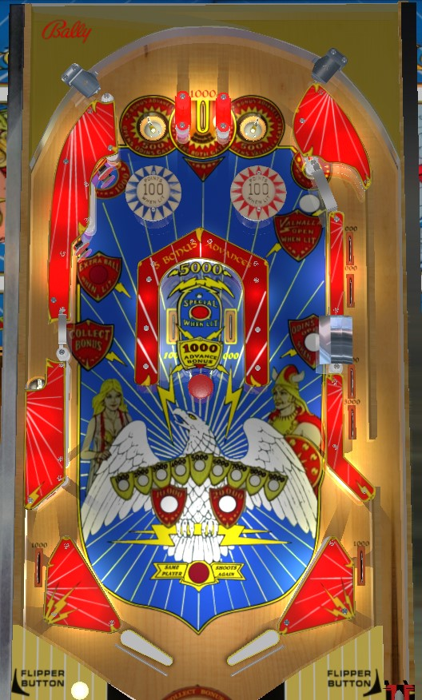

Get control of the ball on either flipper and backhand the center horseshoe shot repeatedly for 7,000 points and 7 bonus advances. If you can reliably shoot the gap on the left side of the table, it is available as a bonus collect at any time, worth up to 20,000 points. Extra ball is available from the middle-left standup target only when base bonus is 10,000, 15,000, or 18,000. Horseshoe is lit alternately for special when the bonus is maxed at 20,000.
The left saucer scores 500 points and 2 bonus advances, lights the red bumper on the right for 100 points, and opens the upper right Valhalla gate. The right saucer scores 500 points and 2 bonus advances, lights the blue bumper on the left for 100 points, and opens the lower right Odin gate. The center lane between the two scores 1,000 points and only 1 bonus advance, and does not light any bumpers but does light both right gates.
Bumpers score 100 points when lit or 10 points when not lit, and start each ball turned off. Standup target above and to the left of the bumpers scores 100 points.
The left saucer opens the upper gate; the right saucer opens the lower gate; the center top lane opens both. Using either gate closes both gates. Both gates return the ball to the shooter lane for a replunge. The upper Valhalla gate scores a total of 8,000 points; the lower Odin gate scores a total of 6,000.
The left gate is always open and available for a bonus collect. Using this bonus collect resets the bonus back to 0 points and automatically launches the ball back toward the top of the table. This is very difficult to shoot directly and should not typically be attempted.
The standup target just above the bonus collect entrance scores 1,000 points. It is lit for extra ball only when the bonus is exactly 10,000, 15,000, or 18,000 points.
The horseshoe can be shot in either direction from either flipper; backhanding the horseshoe is usually preferred. Rollover switches at each entrance score 1,000 points and a bonus advance. A rollover button in the back of the loop scores 5,000 points and 5 bonus advances. Depending on how quickly the score motor registers, a full shot to the horseshoe could be worth up to 7,000 points and 7 bonus advances. If the bonus is maxed at 20,000 points, the button in the horseshoe is lit alternately for Special with each 10-point switch hit.
The mushroom bumper between the two entrances scores 1,000 points and a bonus advance, and is a very dangerous shot, which is part of why backhanding the horseshoe is preferred.
There are no in lanes. Flippers back up directly to the slingshots. Slingshots score 10 points. Out lanes score 1,000 points.
Bonus is advanced 1 time by the center top lane, mushroom bumpers, and horseshoe rollover switches; 2 times by top saucers; and 5 times by the rollover button in the horseshoe. Max bonus is 20,000 points. The first 1,000 points in bonus is NOT given for free; it is possible to end a ball with no end of ball bonus. There is no bonus multiplier or bonus holdover of any kind. The gate into the left kicker lane is always available for a bonus collect; collecting the bonus does reset it back to 0.